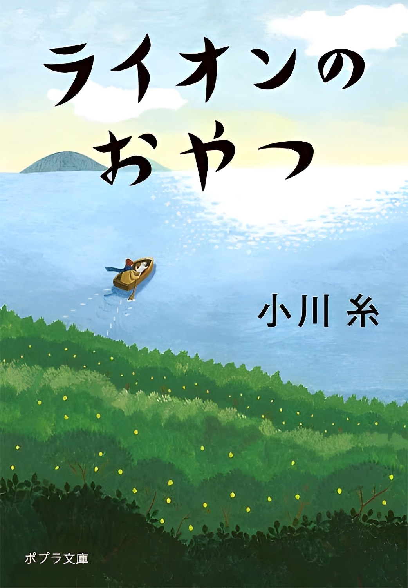

ライオンのおやつ
33歳という若さながら海野雫は癌に蝕まれ医師から余命を告げられる。残りの日々を瀬戸内の島にある「ライオンの家」というホスピスで過ごすことを決めた。そこで毎週日曜日におこなわれる、入居者が思い出のおやつをリクエストできる「おやつの時間」が存在していた。 島での穏やかな日々のなかで、人生の醍醐味を心ゆくまで味わっていくこととなる…。

33歳という若さながら海野雫は癌に蝕まれ医師から余命を告げられる。残りの日々を瀬戸内の島にある「ライオンの家」というホスピスで過ごすことを決めた。そこで毎週日曜日におこなわれる、入居者が思い出のおやつをリクエストできる「おやつの時間」が存在していた。 島での穏やかな日々のなかで、人生の醍醐味を心ゆくまで味わっていくこととなる…。